REDES · curso 2
2. Capa de Aplicación · REDES
Escrito por Adrián Quiroga Linares.
2.1 Introducción
La capa de aplicación se ocupa de la comunicación entre procesos. El esquema típico se muestra en la siguiente figura:
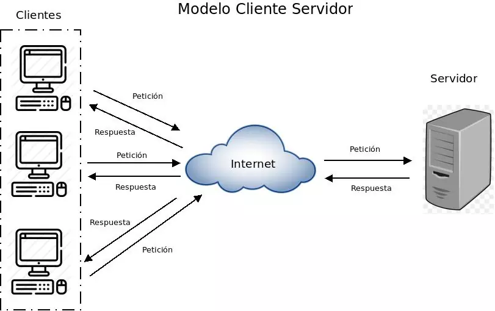
Recordatorio
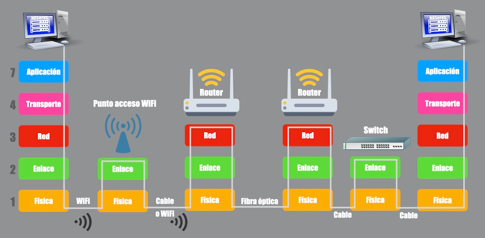
La comunicación de dos procesos, tanto en el mismo host como en hosts diferentes, se hace enviando mensajes. Para que los mensajes sean comprendidos hay que establecer un protocolo. El protocolo facilita la programación. Hay que programar tanto las funciones de envío como las de recepción y si tenemos un protocolo claro de programación será más fácil.
Se deben especificar que tipos de mensajes hay. Las reglas que especifican cuando se envían o responden mensajes. La sintaxis del mensaje y la semántica de cada campo.
Los protocolos de la capa de aplicación utilizan por debajo los protocolos básicos proporcionados por la capa de transporte. Como vimos en el tema anterior, estos son: TCP y UDP, TCP proporciona un servicio fiable y UDP un servicio sencillo y rapido, pero no garantiza la recepción.
| Protocolo | Aplicaciones |
|---|---|
| TCP | HTTP (web) |
| SMTP, POP3 (correo) | |
| FTP (ficheros) | |
| UDP | DNS (traducciones) |
Nota
Denominamos agente de usuario, a la interfaz entre el usuario y la aplicación. O sea el programa gráfico que permite al usuario trabajar cómodamente con la aplicación, por ejemplo firefox.
2.2 Protocolo de Transferencia de Hipertexto HTTP
Este protocolo define la comunicación entre un servidor y un cliente web. Usa TCP y el por defecto, el puerto 80. Una página web usualmente consta de varios objetos, es decir, de varios ficheros:
Cuando un navegador solicita una página web, el primer objeto que se devuelve es el documento base, que contiene el layout de la página usualmente también el texto. El layout indica cómo conseguir lo restantes objetos y dónde han de colocarse.
OJO
Sin el layout no podemos saber como obtener el resto de objetos de la página web
2.2.1 Conexiones No Persistentes
Con conexiones no persistentes se utiliza una conexión TCP distinta para transferir cada uno de los objetos. Pueden ser o en serie o paralelas. Son en serie si se espera a que acabe la conexión TCP previa antes de que comience la siguiente. Son paralelas si se inician varias conexiones TCP a la vez.
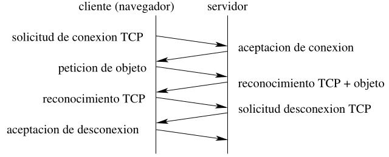
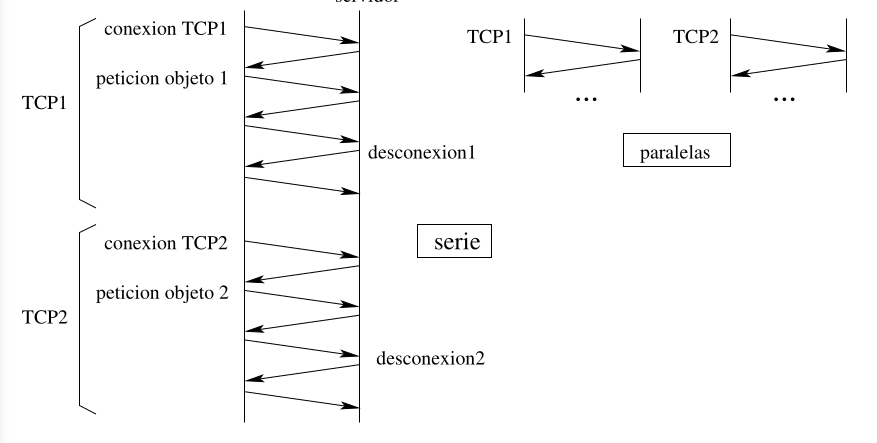
2.2.2 Conexiones Persistentes
Con conexiones persistentes se utiliza la misma conexión TCP para conseguir varios objetos o incluso varias páginas web diferentes. Típicamente el servidor cierra la conexión TCP cuando no ha sido utilizada durante cierto tiempo. Existen dos versiones de conexiones persistentes, en la versión sin entubamiento, el cliente sólo pide un nuevo objeto cuando el previo ha sido recibido. En la versión con entubamiento el cliente puede hacer peticiones de varios objetos antes de recibir los anteriores. El modo por defecto de HTTP/1.1 es persistente con entubamiento.
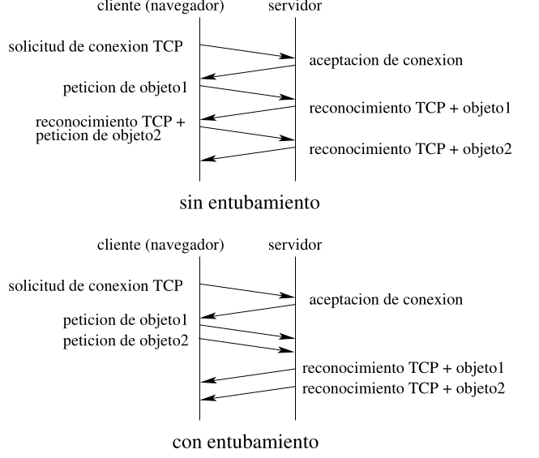
2.2.3 Tiempo de transferencia de una página web
El transferencia del primer objeto
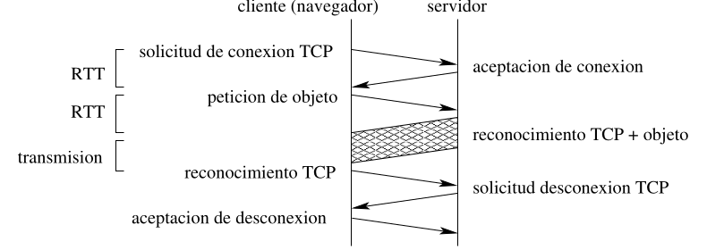
- Tiempo de ida y vuelta (RTT round-trip time): Es el tiempo que tarda una solicitud de red en ir de un punto de partida a uno de destino y volver al punto de partida. La solicitud no deja de ser un paquete muy pequeño. El
incluye los retardos de propagación de los paquetes, los retardos de cola en los routers y switches intermedios y los retardos de procesamiento de los paquetes. - Tiempo de transmisión del fichero: tiempo que pasa entre que el host escribe en el enlace el primer bit del paquete hasta el último.
- Tiempo total para transmitir un paquete:
Importante
No se suman los tiempos extras del tema anterior, porque el RTT cuenta el tiempo de propagación puesto que no depende del número de bits a enviar, también cuenta el retraso en colas y el de procesamiento, tanto de ida como de vuelta.
2.2.4 Mensajes HTTP
El protocolo HTTP define cómo se envían y reciben mensajes entre un cliente (por ejemplo, un navegador web) y un servidor (el sitio web al que se accede). Estos mensajes se separan en cabeceras (headers) y un cuerpo (body), donde la cabecera contiene información de control y el cuerpo contiene los datos solicitados o enviados, como páginas web o imágenes.
Peticiones (Request): El cliente las envía al servidor para solicitar recursos, como páginas web o imágenes.
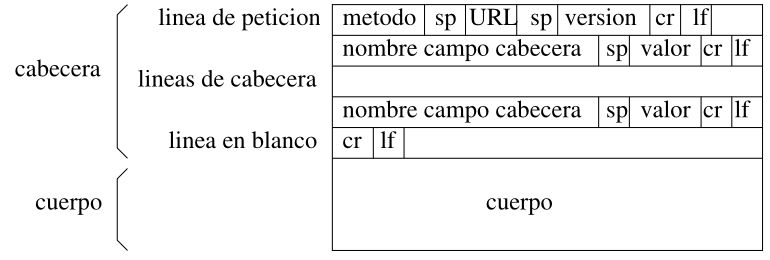
El significado de estos campos es el siguiente:
- método:
GET(página normal) oPOST(formulario) - sp: espacio, en formato ASCII7
- URL: la dirección del objeto que se requiere
- versión: versión de HTTP en uso
- cr: retorno de carro,
\r - lf: salto de línea
\n - nombreCampo: puede haber varias líneas de este tipo. Esta variable puede ser:
Host(para el nombre del servidor)Connection(que puede valer “close”, para conexiones no persistentes)User-agent(nombre del navegador en uso)Accept-language(el idioma preferido por el solicitante)
- valor: para cada posible
nombreCampotambién tiene que especificarse el valor que toma - cuerpo: en caso de que
método=POST, contiene los datos del formulario
Esta estructura permite que el servidor entienda qué acción debe realizar, sobre qué recurso y con qué parámetros adicionales.
Mensaje de respuesta: El servidor responde con los recursos solicitados o con información sobre el éxito o fracaso de la petición.
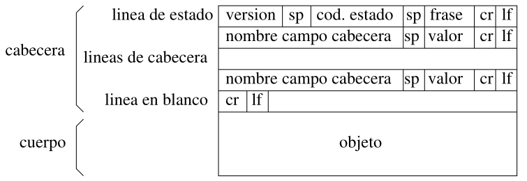
El significado de estos campos es similar al de los mensajes de petición, pero:
- cod: es la codificación de la frase (por ejemplo,
200, OK;404, Not Found;400, Bad Request) - nombreCampo: ahora puede ser:
Connection(igual que en los de petición)Date(fecha de envío)Server(servidor que envía el objeto)Last-Modified(fecha de la última modificación del objeto)Content-Length(tamaño en bytes)Content-Type(tipo de contenido del objeto, como una extensión)
- cuerpo: los datos del objeto que se envía
[! Info] Las cookies son pequeñas piezas de datos que un servidor web envía al navegador de un usuario y que el navegador guarda localmente. Cada vez que el usuario vuelve a visitar el sitio, el navegador incluye esas cookies en la solicitud HTTP, permitiendo que el servidor "recuerde" al usuario.
- Cuando un usuario visita un sitio web, el servidor crea una cookie con un identificador único y se la envía al navegador.
- El navegador guarda esta cookie en un archivo de cookies.
- En visitas futuras, el navegador envía esta cookie al servidor junto con las solicitudes HTTP, lo que permite al servidor reconocer al usuario.
Cuando "Susana" visita Amazon, el servidor de Amazon le asigna un identificador (por ejemplo, "1678") y lo guarda en su base de datos junto con cualquier otra información relevante. Este ID se almacena en una cookie en el navegador de Susana. La próxima vez que Susana visite Amazon, su navegador enviará la cookie, y el servidor podrá identificarla y ofrecerle contenido personalizado.
Las cookies permiten a los sitios web identificar a los usuarios, recordar preferencias y mantener sesiones (por ejemplo, el carrito de compras en Amazon). Sin embargo, también plantean preocupaciones de privacidad, ya que permiten el seguimiento de la actividad del usuario en la web.
2.3 FTP: Protocolo Transferencia Ficheros
El FTP (File Transfer Protocol) es un protocolo diseñado para la transferencia de archivos entre un cliente y un servidor. A diferencia de otros protocolos, FTP utiliza dos conexiones TCP en paralelo: una para el control y otra para la transferencia de datos.
La conexión de control (puerto 21) es la que se utiliza para gestionar la sesión FTP, enviando y recibiendo comandos entre el cliente y el servidor. Este canal permanece abierto durante toda la sesión, es decir, es persistente.
- Comandos transmitidos: Se envían comandos como nombre de usuario, contraseña, solicitar directorios, pedir archivos, cerrar la sesión, etc..
- Formato de los comandos: Los comandos son legibles, utilizando texto ASCII de 7 bits, y se componen de palabras de 4 letras en mayúsculas seguidas de parámetros (si los hay). Ejemplo:
USER,PASS,LIST,RETR. - Respuestas del servidor: El servidor responde con códigos de 3 dígitos (que indican el resultado de los comandos) acompañados de una explicación en texto. Ejemplo:
230 User logged in, proceed.
La conexión de control se mantiene activa durante toda la sesión de FTP, incluso cuando no se están transfiriendo datos.
La conexión de datos (puerto 20) se encarga de transferir los archivos o listas de directorios entre el cliente y el servidor. A diferencia de la conexión de control, esta conexión no es persistente, es decir, se abre y se cierra cada vez que se necesita transferir un archivo o realizar alguna operación que implique datos (como listar directorios).
- Datos transmitidos: Puede ser el contenido de los archivos que se están transfiriendo o el resultado de comandos como
LIST(que devuelve un listado de archivos y directorios). - Formato de transmisión: Los datos se transmiten en binario, lo que permite transferir cualquier tipo de archivo (texto, imágenes, vídeos, etc.) sin pérdida de información.
- Apertura y cierre: Cada vez que se necesita enviar o recibir un archivo, se establece una nueva conexión TCP para los datos y se cierra al finalizar la transferencia.
FTP es un protocolo con estado, lo que significa que el servidor mantiene información sobre la sesión mientras está activa. Entre los datos que guarda están:
- El nombre del usuario que ha iniciado sesión.
- El directorio actual en el que el usuario está navegando.
- Otros detalles que permiten al servidor recordar el contexto de la sesión hasta que el usuario cierra la conexión.
Esto es necesario para que el servidor pueda gestionar múltiples usuarios y archivos de forma ordenada.
Los comandos FTP que envía el cliente son cadenas de texto simples, normalmente de una palabra de cuatro caracteres en mayúsculas (como USER, PASS, LIST, RETR, STOR), y cada uno va acompañado de una acción específica.
Por ejemplo:
USER <nombre>: Enviar el nombre de usuario para autenticar.PASS <clave>: Enviar la contraseña.LIST: Listar los archivos del directorio actual.RETR <archivo>: Descargar un archivo desde el servidor.STOR <archivo>: Subir un archivo al servidor.
Las respuestas del servidor siguen un formato estándar de códigos de tres dígitos, que indican el estado de la operación, seguidos de un mensaje explicativo:
200: Operación exitosa.230: Usuario autenticado correctamente.550: Error, archivo no encontrado o sin permisos.
Una de las limitaciones importantes de FTP es que no cifra los datos, incluyendo el nombre de usuario y la contraseña que se envían por la red. Esto significa que, en una red insegura, alguien podría interceptar y leer esa información.
2.4 SMTP: Protocolo Transferencia. Correo Sencillo
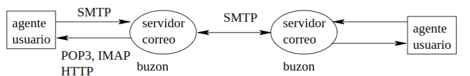
SMTP (Simple Mail Transfer Protocol) es el protocolo estándar para la transferencia de correo electrónico entre servidores. SMTP se encarga de enviar correos desde el cliente (el remitente) hacia un servidor de correo, y también entre servidores de correo.
Nota
Solo se usa para enviar correos entre cliente-servidor y comunicar servidor-servidor. Para acceder al correo se usan protocolos más seguros como IMAP y POP3.
- Puerto utilizado: SMTP utiliza el puerto 25 para comunicarse entre servidores de correo.
- Conexiones TCP persistentes: Al igual que FTP, SMTP mantiene una conexión TCP persistente mientras dure la sesión de envío del correo.
- Formato de los mensajes: Los correos y comandos que se envían a través de SMTP utilizan ASCII de 7 bits, por lo que los mensajes y las instrucciones son legibles por humanos.
El sistema de correo electrónico consta de varias partes:
-
Agente de usuario (Mail User Agent, MUA): Es el programa que los usuarios utilizan para gestionar su correo, como Outlook, Thunderbird o los clientes de correo de un navegador web (Gmail, Yahoo, etc.). El agente de usuario permite:
- Escribir correos electrónicos.
- Enviarlos a través de un servidor de correo.
- Descargar correos recibidos desde un servidor, usando otros protocolos como POP3, IMAP, o incluso HTTP (en el caso de interfaces web).
Es importante notar que el buzón de correo (donde se almacenan los correos que recibes) no está en el ordenador local, sino en un servidor remoto. Esto es útil porque los correos pueden llegar en cualquier momento del día, mientras que el ordenador del usuario no siempre está encendido o conectado a internet.
-
Servidor de correo (Mail Transfer Agent, MTA): Cuando el usuario envía un correo, su agente de usuario lo transfiere al servidor de correo. Este servidor de correo se encarga de procesar y enviar el correo al servidor de destino adecuado. Aquí es donde entra en juego SMTP.
El servidor de correo origen examina la dirección de destino y utiliza el protocolo SMTP para buscar el servidor de correo destino. Una vez identificado, transfiere el correo a dicho servidor, donde queda almacenado en el buzón del destinatario.
SMTP está diseñado para facilitar la comunicación entre servidores de correo. Aunque teóricamente la comunicación es directa entre dos servidores (origen y destino), en la práctica puede haber servidores intermedios que retransmitan los correos, especialmente si hay problemas de red o fallos temporales.
Para enviar un correo:
- El usuario escribe un correo en su agente de usuario y lo envía.
- El agente de usuario lo transfiere al servidor de correo origen.
- El servidor de correo origen utiliza SMTP para establecer una conexión con el servidor de correo destino.
- SMTP transmite el correo del servidor origen al servidor destino, donde el mensaje queda almacenado en el buzón del destinatario.
- El destinatario puede, en cualquier momento, acceder a su correo y descargarlo mediante protocolos como POP3, IMAP, o directamente a través de un navegador web usando HTTP.
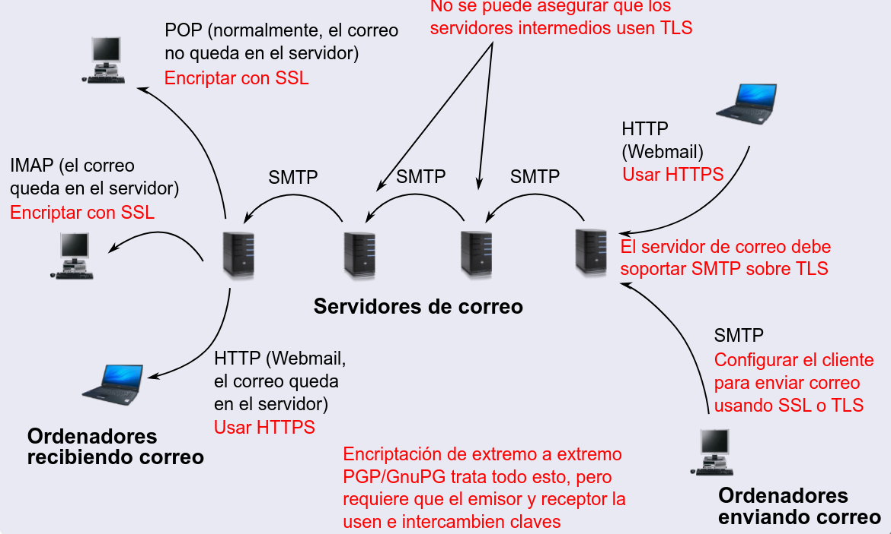
SMTP también maneja casos en los que no se puede entregar el correo de inmediato:
- Si el servidor de correo destino está fuera de servicio o no responde, el servidor origen pone el mensaje en una cola de espera.
- El servidor de correo intentará reenviar el correo cada cierto tiempo (generalmente, cada 30 minutos).
- Si después de varios intentos fallidos (normalmente, varios días) el correo no ha podido ser entregado, el servidor envía un mensaje de error de vuelta al remitente, informando que el correo no ha podido ser entregado.
SMTP (Simple Mail Transfer Protocol) utiliza tres tipos principales de mensajes para la comunicación entre el cliente (quien envía el correo) y el servidor (quien lo recibe):
-
Comandos
HELO(nombre del servidor)MAIL FROM(dirección del remitente)RCPT TO(dirección de destino)DATA(contenido)QUIT
-
Respuestas
- Con códigos numéricos y frases aclaratorias
-
Datos
- Son el contenido de los correos, con todos los objetos encapsulados
SMTP, tal como se diseñó originalmente, es un protocolo inseguro porque no solicita autenticación del remitente. Esto significa que cualquier cliente puede conectarse a un servidor SMTP y enviar correos a cualquier destinatario sin identificarse, lo que facilita la creación de spam (correos no deseados).
2.5 Protocolos de Acceso al Correo
Una vez que un correo ha llegado al buzón de destino, el siguiente paso es transferirlo al ordenador local del usuario. Para esto, no se utiliza SMTP, ya que este protocolo está diseñado para enviar correos (es un protocolo de oferta) y requeriría que el ordenador local estuviera siempre encendido y conectado a Internet, esperando la llegada de mensajes. Por lo tanto, se han diseñado protocolos específicos para descargar correos, siendo POP3, IMAP y HTTP los más comunes. Aquí nos centraremos en POP3.
2.5.1 Funcionamiento de POP3
POP3 (Post Office Protocol 3) permite a los usuarios descargar correos desde un servidor a su ordenador local. El proceso se basa en tres tipos de mensajes que se intercambian entre el agente de usuario (cliente) y el servidor de correo:
-
Comandos (de 4 caracteres)
user(nombre de usuario)pass(palabra clave)listretr(número de correo, para traer correo)dele(número de correo)quit
-
Respuestas
OKoERR, con frases explicativas
-
Datos
- La lista de mensajes, los contenidos de los correos, o el correo completo en un único mensaje
POP3 utiliza el puerto 110 para la comunicación. Durante una sesión de POP3, se utiliza una única conexión TCP persistente que puede ser mantenida abierta mientras el usuario descarga varios correos. Esto ahorra tiempo y recursos en comparación con abrir y cerrar conexiones repetidamente. A diferencia de SMTP, que permite enviar correos sin necesidad de una cuenta, POP3 requiere que el usuario tenga una cuenta y una contraseña válidas. Esto significa que el servidor verifica la identidad del usuario antes de permitir el acceso a los correos, lo que ayuda a prevenir el acceso no autorizado.
Modos de Operación de POP3:
- Descargar y borrar: Con el comando
RETRseguido deDELE, los correos son descargados y luego eliminados del servidor. - Descargar y mantener: Solo se utiliza el comando
RETR, permitiendo que los correos permanezcan en el servidor después de ser descargados.
POP3 es un protocolo eficiente y seguro para la transferencia de correos, permitiendo a los usuarios gestionar su correspondencia sin necesidad de mantener sus dispositivos siempre conectados. Su estructura de comandos y respuestas proporciona un método sencillo para acceder a los mensajes, lo que lo convierte en una opción popular para el acceso a correos en muchos entornos.
2.5.2 Funcionamiento de IMAP
IMAP es un protocolo diseñado para acceder y gestionar correos electrónicos de manera más versátil y eficiente que su predecesor POP3, especialmente para usuarios que necesitan acceso remoto y sincronización constante entre dispositivos.
Con POP3, los mensajes se descargan y se guardan localmente en el dispositivo del usuario. Una vez descargados, se eliminan del servidor (aunque algunas configuraciones permiten dejarlos en el servidor). Por lo que no se puede acceder a los mensajes desde otros dispositivos. Además, POP3 no soporta la creación y manejo de carpetas en el servidor remoto, lo que limita la organización del correo en múltiples dispositivos.
IMAP permite crear, renombrar y borrar carpetas directamente en el servidor. Los mensajes pueden moverse entre carpetas en el servidor. Esto asegura que la organización del correo sea consistente y accesible desde cualquier dispositivo conectado.
A diferencia de POP3, IMAP guarda información sobre el estado de los mensajes y carpetas en el servidor. Por ejemplo, si un mensaje ha sido leído, movido o borrado desde un dispositivo, esos cambios se reflejan en todos los dispositivos conectados.
El servidor asocia cada mensaje con una carpeta. Cuando llega un mensaje va a la carpeta INBOX. Permite leer, borrar, mover a otra carpeta. Hay comandos para crear carpetas, realizar búsquedas, descargar partes del mensaje.
2.6 DNS: Servicio de Nombres de Dominio
Nosotros en Internet, para poder comunicar a un cliente y a un servidor, necesitamos conocer ambos sockets. Si recordamos, los sockets están formados por IP:Puerto. Entonces, ¿cómo podemos conocer la IP destino de una página web? Para eso tenemos los DNS.
INFO
Con el comando ping dominio obtenemos la ip de un determinado dominio
El Sistema de Nombres de Dominio (DNS) es fundamental para el funcionamiento de Internet, ya que se encarga de traducir los nombres de host (como www.ejemplo.com) a direcciones IP (como 192.0.2.1) y viceversa. Este sistema permite que los usuarios accedan a sitios web utilizando nombres fáciles de recordar en lugar de tener que memorizar largas cadenas de números.
DNS utiliza el protocolo UDP (User Datagram Protocol), específicamente el puerto 53. Esto se debe a que DNS no necesita mantener el estado de las conexiones. Cada host tiene una lista de direcciones de servidores de nombres, generalmente configurada durante la instalación del sistema operativo.
Cuando un host necesita realizar una traducción, se dirige al primer servidor de la lista. Si no recibe respuesta, se mueve al siguiente, y así sucesivamente. Esta estrategia permite que DNS sea más eficiente, ya que, en lugar de intentar reestablecer una conexión con el primer servidor, busca otros.
Realiza traducciones de nombres de hosts a direcciones IP y viceversa, permitiendo obtener alias de hosts. Indica qué servidor está autorizado para proporcionar información sobre un dominio específico, lo que es crucial para la administración de dominios.
Permite simplificar direcciones de correo electrónico. Por ejemplo, usc.es puede ser un alias para el servidor de correo smtp.usc.es, facilitando la escritura de direcciones como peptio@usc.es.
Un mismo nombre de host puede tener múltiples direcciones IP asociadas, lo cual es útil para servidores espejo (servidores que tienen el mismo contenido). DNS puede configurarse para devolver estas direcciones IP de manera rotativa.
2.6.1 Elementos del DNS
El DNS se compone de numerosos servidores de nombres distribuidos por Internet. Estos servidores trabajan en conjunto para traducir los nombres de dominio en direcciones IP.
El DNS utiliza un protocolo que permite a los hosts (computadoras) solicitar traducciones a los servidores de nombres y que los servidores intercambien información entre ellos.
Servidores Raíz: Hay un número limitado de servidores raíz en Internet que proporcionan información sobre los dominios de nivel superior (como .com, .org, .es). Si se pregunta a un servidor raíz sobre el dominio .es, proporcionará información sobre servidores de nombres en ese dominio.
Servidores Intermedios o TLD: Estos servidores proporcionan información sobre dominios de niveles intermedios (como usc.es). Si se le pregunta a un servidor en la raíz sobre el dominio usc.es, puede proporcionar información sobre un servidor en la Universidad de Santiago.
Servidores autoritativos: todas las organizaciones que tienen hosts accesibles públicamente a través de internet deben proporcionar registros DNS accesibles públicamente que establezcan la correspondencia entre los nombres de dichos hosts y sus direcciones IPs. Una organización puede elegir implementar su propio servidor DNS autoritativo para almacenar estos registros.
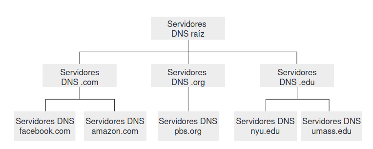
Servidores Locales: Son los que manejan las consultas de los hosts en una red local. Cada host tiene una lista de estos servidores, que a menudo son proporcionados por el ISP (Proveedor de Servicios de Internet). El host comienza consultando el primer servidor de la lista.
INFO
Un dominio es un nombre que identifica a un sitio web en Internet. Es una parte fundamental de la dirección de un sitio web y se utiliza para acceder a recursos en la red de manera fácil y comprensible para los usuarios. Por ejemplo, en la URL www.ejemplo.com, ejemplo.com es el dominio.
2.6.2 Tipos de Consultas a Servidores DNS
Consultas Recursivas: En este tipo de consulta, cada servidor de nombres se encarga de interrogar al siguiente hasta obtener la respuesta final.
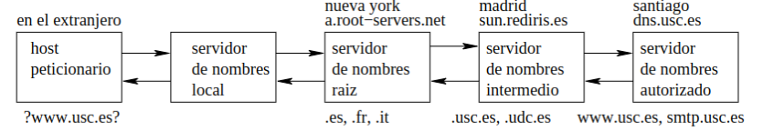
Consultas Iterativas: En este caso, el servidor de nombres local se pone en contacto con todos los servidores necesarios para obtener la información.
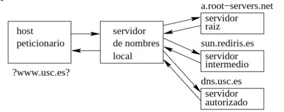
2.6.3 Caché DNS
Cuando un servidor DNS obtiene una traducción, almacena una copia en su memoria local (disco o RAM) para futuras consultas. Esta caché se utiliza para responder a consultas repetidas de manera más rápida. Las entradas de la caché se eliminan después de un tiempo específico (generalmente, cada dos días).
2.6.4 Mensajes DNS
Existen dos tipos de mensajes en el DNS: Consultas y Respuestas. Ambos mensajes tienen un formato similar, que consta de una cabecera con información de control y un cuerpo que contiene las consultas y respuestas.
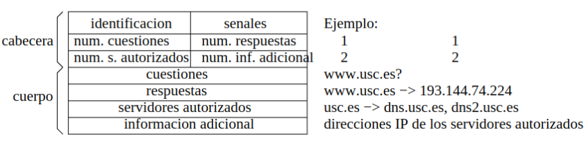
-
Cabecera: Contiene 6 campos, algunos de los cuales son en binario:
- Identificación: Un número de 16 bits que identifica la consulta, permitiendo que un host realice múltiples consultas simultáneamente.
- Señales: 4 bits que indican el tipo de mensaje (consulta o respuesta), si la respuesta proviene de un servidor autorizado, si se requiere una consulta recursiva, etc.
- Tamaño de Campos del Cuerpo: Indica la cantidad de preguntas, respuestas, servidores autorizados y datos adicionales en el mensaje.
-
Cuerpo: Consta de 4 campos:
- Cuestiones: Preguntas que incluyen el nombre o dirección IP a traducir.
- Respuestas: Respuestas obtenidas, como pares de nombres de host y direcciones IP. Un nombre de host puede corresponder a múltiples direcciones IP.
- Servidores Autorizados: Indica los servidores de nombres autorizados que se pueden consultar para un dominio específico.
- Información Adicional: Incluye datos que no fueron solicitados explícitamente.
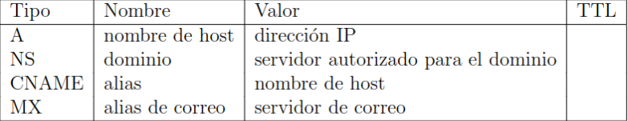
2.7 Distribución de contenidos
La distribución de contenidos se refiere a las diversas técnicas utilizadas para gestionar y entregar contenidos digitales (como páginas web, archivos de audio, video, etc.) de manera eficiente, reduciendo el tiempo de carga y mejorando la experiencia del usuario.
Los accesos a servidores centralizados pueden ser lentos por la congestión de red y la sobrecarga del servidor. Para abordar estas limitaciones, se utilizan métodos alternativos a los servidores centralizados. En lugar de almacenar todos los contenidos en un solo servidor, se distribuyen y duplican en diferentes ubicaciones geográficas, dirigiendo las peticiones al servidor que ofrezca el menor tiempo de respuesta.
2.7.1 Caché Web (Servidor Proxy)
La caché web implica la utilización de un servidor intermedio, conocido como proxy, que gestiona todas las peticiones web de los usuarios en una red. Este servidor proxy normalmente es proporcionado por el ISP.
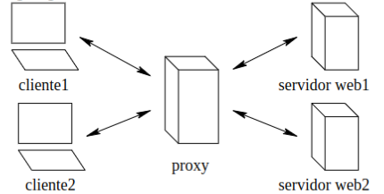
El navegador establece una conexión TCP con la caché web y envía una solicitud HTTP para el objeto a la caché web. La caché comprueba si tiene una copia del objeto almacenada localmente, si la tiene devuelve el objeto. Si no tiene el objeto, abre una conexión TCP con el servidor origen y envía una solicitud HTTP para obtener el objeto. Cuando recibe este objeto almacena una copia localmente y se lo envía como mensaje de respuesta HTTP al cliente.
Los usuarios deben configurar sus navegadores para utilizar el servidor proxy, indicando la dirección del mismo.
Puede haber un esquema jerárquico de proxies, donde varios proxies se comunican entre sí para optimizar aún más la distribución.
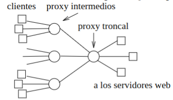
2.7.2 Redes de Distribución de Contenidos (CDN)
El objetivo es aumentar la velocidad y reducir la latencia. Las usan empresas que tienen páginas web muy visitadas (Youtube).
Las CDN son gestionadas por empresas que poseen una infraestructura de múltiples servidores distribuidos globalmente. Estas empresas no crean contenido, sino que alquilan su infraestructura a otras organizaciones. Por ejemplo, Akamai replica contenidos de sitios como El País en sus centros de hospedaje.
La CDN replica los contenidos de sus clientes en los servidores CDN y los mantiene actualizados. La CDN proporciona un mecanismo para que el contenido sea entregado por el servidor CDN que pueda hacerlo más rápidamente.
Cuando se indica al navegador del host de un usuario que extraiga un vídeo concreto, la CDN debe interceptar la solicitud para determinar un conjunto de servidores de la CDN que resulte adecuado para ese cliente en ese preciso instante y redirigir la solicitud del cliente a un servidor situado en dicho conjunto.
Si estas en España, no te va a mandar a un conjunto de servidores de Etiopía por ejemplo. Si todo el mundo accede a los servidores de Islandia, posiblemente colapsen.
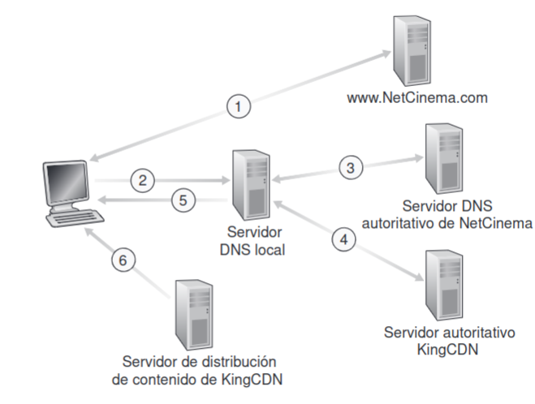
2.7.3 Redes P2P (de Igual a Igual)
Las redes P2P permiten a los usuarios actuar tanto como clientes como servidores, compartiendo archivos entre sí. Al unirse a una red P2P, los usuarios pueden descargar y compartir contenido desde sus propios discos duros. Esto implica que no dependen de que haya un servidor activo funcionando. Un usuario se une a la red P2P ejecutando una aplicación (bittorrent).
Cuando se ejecuta la aplicación, lo primero que hace es buscar a otros usuarios P2P. Se necesita por lo menos un nodo de arranque, es decir por lo menos conocer a un usuario que ya esté en la red.
Una vez conecto a la red P2P, el usuario da a conocer públicamente el contenido de su disco duro. La red P2P necesita construir un directorio con la totalidad de los contenidos y su ubicación.
Directorio Centralizado
Napstar. Con este método, un único host en Internet centraliza la construcción y almacenamiento del directorio. Cuando un usuario ejecuta la aplicación P2P se dirige al host central y le proporciona su lista de contenidos. El host central construye el directorio con todos los datos proporcionados por los usuarios y atiende a todas las consultas.
Se puede pensar como que el host central contiene un listado de que ordenadores hay y qué archivos ofertan por eso es un directorio.
El directorio se actualiza constantemente. Cuando un usuario consigue un contenido pasa a ser servidor de ese contenido. Cuando un usuario deja de tener actividad es borrado del directorio.
Cuando se quiere obtener un archivo se consulta al host central y así sabe a que ordenador conectarse, porque el host central contiene toda la información de los ordenadores de la red.
Sin embargo, si falla el host central falla todo. El host central tiene que mantener el directorio de millones de usuarios y millones de consultas. Hay un tráfico enorme hacia ese punto.
Directorio Descentralizado
Kaaza .Consiste en distribuir el directorio entre algunos de los usuarios P2P. Ciertos usuarios son designados como líderes en función de ciertos criterios (velocidad de las conexiones, antigüedad en la red, etc).
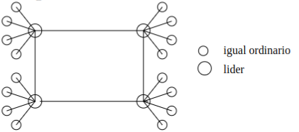
Cada líder es responsable de atender las consultas de un grupo de usuarios que tiene a su cargo. Las consultas que no puede resolver por sí mismo las redirecciona a los otros líderes con los que está conectado. Esto origina una red de superposición (red virtual sobre la red real) con la correspondencia siguiente:
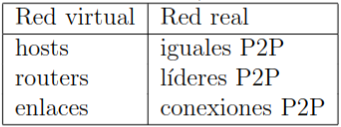
Se resuelven así el problema del centralizado que tenía un único punto de fallo y el cuello de botella.
Inundación de Consultas
Gnutella. Con este método, la red de superposición es plana, con todos los usuarios al mismo nivel. No se utiliza directorio, sino inundación de consultas. Las consultas se retransmiten de usuario en usuario hasta que se encuentra el contenido solicitado. El problema que tiene es que origina un tráfico enorme de mensajes. Esto se resuelve parcialmente limitando la profundidad de la inundación: se cuenta el número de nodos por los que pasa la consulta y cuando llegue a un cierto valor se da por terminada la consulta.
Descarga de Archivos
En una aplicación P2P clásica, una vez que un usuario ha descargado un fichero completo puede convertirse a su vez en servidor de dicho fichero.
Este método de descarga puede mejorarse si la descarga de los ficheros se hace por segmentos. Un usuario que ha descargado un segmento de un fichero puede convertirse a su vez en servidor de dicho segmento antes de que complete la descarga del fichero.
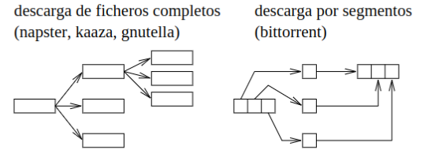
Podemos pensarlo como que cada usuario tiene fragmentos de 1 GB de una película pirata, y después si un usuario quiere verla, los junta en su ordenador. Van dpm pa piratear y no te pueden denunciar.